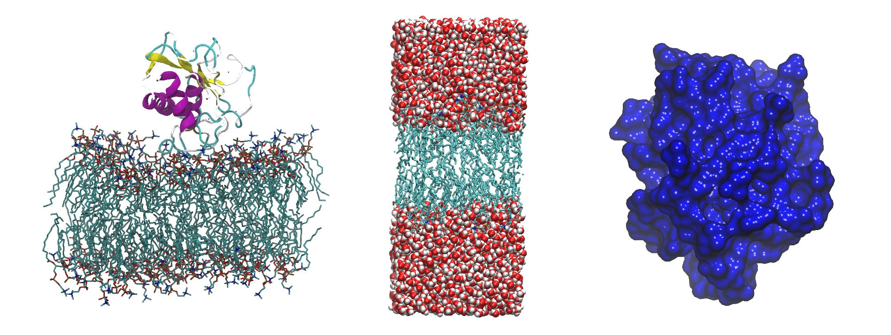

Welcome!
Web dedicated to show programs created with python 3 focused on computational chemistry.
Computational chemistry is a part of science that comprises the areas of chemistry, biology and physics linked to computation, which allows the investigation of atoms, molecules and macromolecules by means of a computer system. This type of analysis is generally carried out when laboratory research is inappropriate, impracticable or impossible due to the extreme conditions of such experiments (high temperatures, vacuum conditions, etc.), or to the high costs generated [1].
Why Python?
It's a great multiplatform
Python is an interpreted programming language, so it works in any type of system that integrates its interpreter. Apart from this advantage, Python offers us dialects like the already known Jython, which is used to write in Java [2].
Frameworks of great utility
Python is not only multiplatform and multiparadigma, but it will also help us to develop any kind of way, such as web or mobile. To make this happen, this programming language has high caliber frameworks, which help from web development to the development of games or scientific algorithms for advanced calculations [2].
It's free and offers us open source
If we talk about the license you have, this is Python Software Foundation License, a license very similar to the GPL, but finding the exception that you can distribute the binaries of the language without having to annex the sources [2].
High quality syntax
The syntax offered by this programming language is one of its most notorious features. In Python, a block of internal code such as an if is created through indentations, which forces the developer to indent its source code ensuring a notorious readability [2].
Bibliography
- Valles, A., Rosales, L., Serrato, L., & Farías, L. (2014). Methods and Uses of Computational Chemistry. Revista Científica De La Universidad Autónoma De Coahuila, 6.
- 7 razones para programar en Python – Bejob. (2019). Retrieved 6 October 2019, from https://www.bejob.com/7-razones-para-programar-en-python/
News

Programs
New version Orca-Q v0.5 beta
Orca-Q is a desktop application that provides functionality for running ORCA jobs that would otherwise require the use of the command line. Orca-Q is a program to manage and control ORCA inputs.

Programs
New version ConvtISP v0.0.2
Convert Images to Scientific Publication. Program created to convert images to grayscale or black-and-white. Resolution of 300 dpi. Compatible Formats: .jpeg .jpg .png .tiff